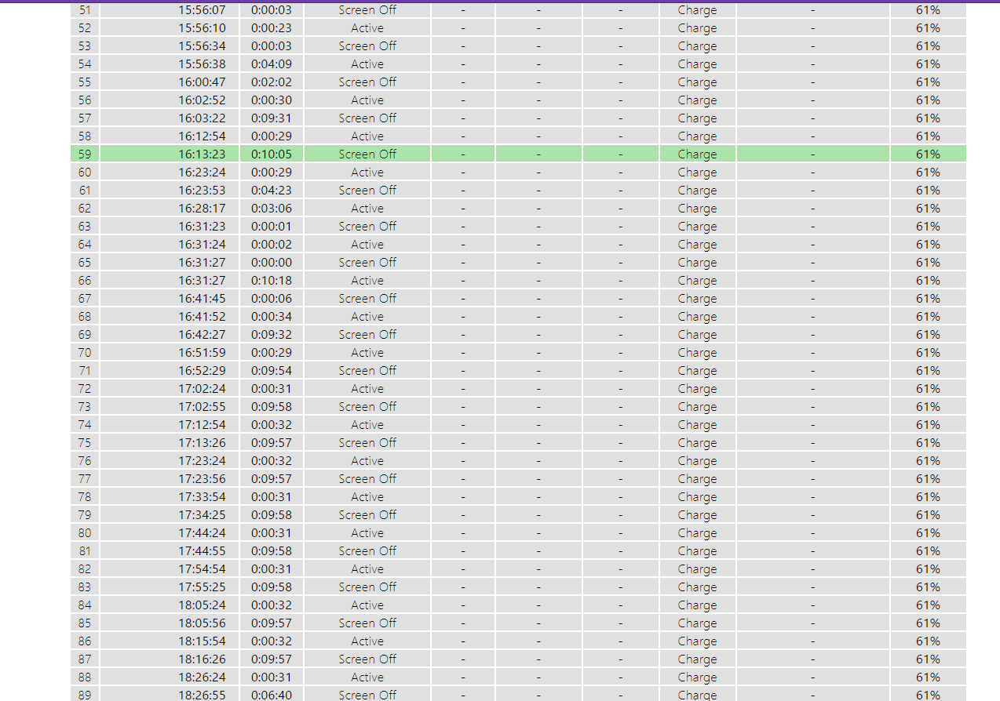
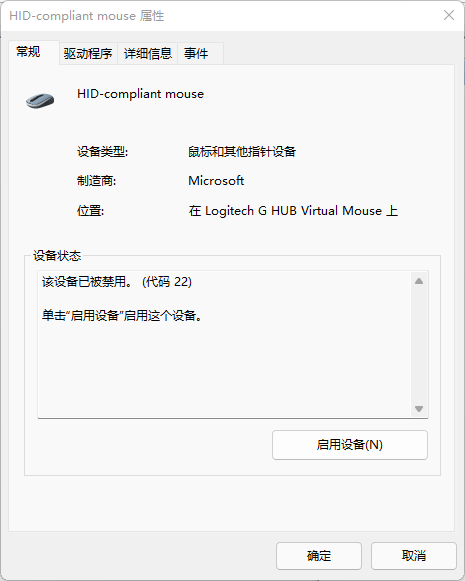
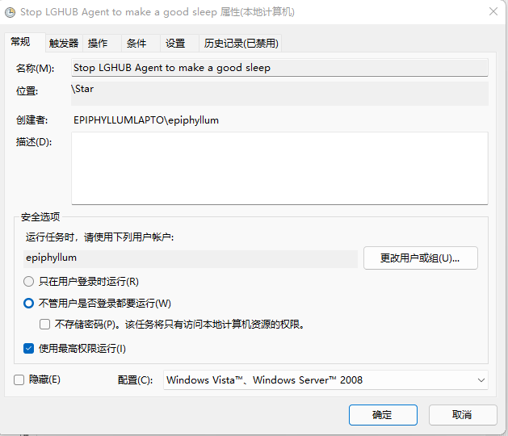
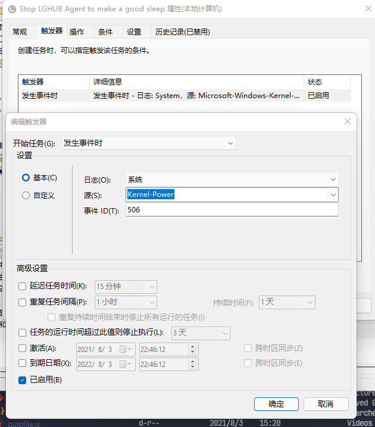
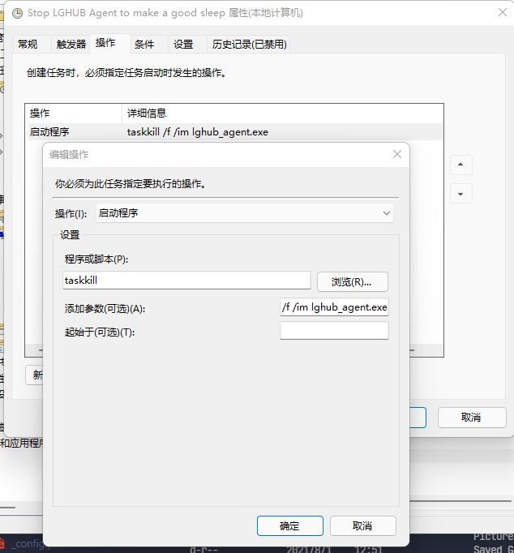
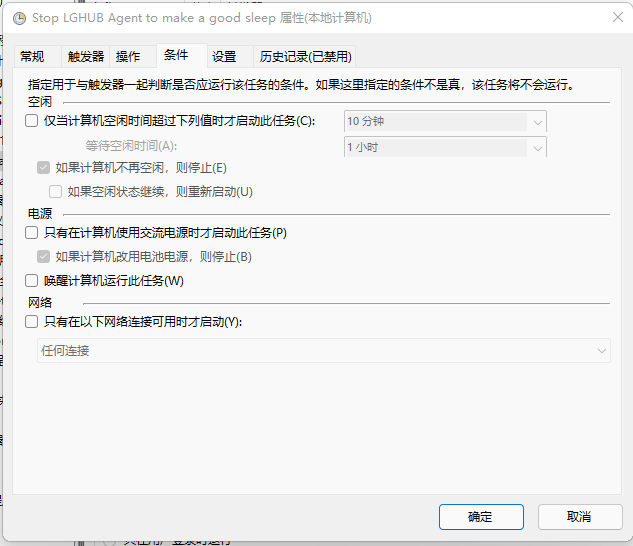

一台使用Modern Standby的电脑安装了G Hub， 这是它睡眠状态的变化--解决G Hub与Modern Standby不兼容问题
Problem
我在最近买了一台使用Modern Standby作为睡眠模式的笔记本， 并配合我的G304使用， 安装了Logitech G Hub软件。
但是， 在使用一段时间后发现，我发信我的电脑完全无法进入睡眠状态，无论是使用睡眠按钮还是等待屏幕超时，电脑总会在屏幕熄灭10min左右后重新亮起，然后再次熄灭， 以此循环
MS提供了sleepstudy工具用于分析待机状态，管理员权限运行以下指令获得待机报告
1 | powercfg /sleepstudy |

一看待机报告， 好家伙， 电脑在按下睡眠按钮后完全没有进入睡眠模式，而是在Active和Screen Off中循环。而Screen Off的EXIT REASON均为Mouse Input，即检测到鼠标动作（此时显然我是没有动鼠标的）。
经过测试，即使我关闭无限鼠标和触摸板， 系统仍然在Screen Off 和 Active之间鬼畜, 无法进入Sleep状态。只有在拔出无限鼠标接收器后才可正常睡眠。
后来经过查阅，是G Hub在电脑即将从Screen Off转至Sleep状态时持续通过虚拟鼠标给予电脑睡眠，导致电脑再次被唤醒。
Concepts
Modern Standby
电脑睡眠模式是否为Modern Standby可由以下指令查询
若S0低电量待机处于激活状态且S3待机处于不支持/禁用状态，那么你的电脑即使用Modern Standby
Modern Standby (即S0低电量待机)是微软在win10中推广的新睡眠模式
根据官方文档的介绍, 现代待机可以选择性地使电脑保持唤醒（Screen off 或 Connected Standby）状态和睡眠状态(Disconnected Standby, 类似S3睡眠)，使得关键应用能按需在后台保持运行（例如闹钟、音频播放、Windows更新等）
听起来牛批坏了，不是吗？ 嗯…当一样东西听上去牛批坏了，那么它可能真的是坏的。
目前Modern Standby仍不能很好的解决外设唤醒的逻辑。特别是与鼠标。即使你在设备管理器中禁止鼠标唤醒电脑，它却仍可在Modern Standby中唤醒。
我以前有禁止鼠标唤醒电脑的习惯（因为鼠标太容易误触了），但是切换到Modern Standby后， 在设备管理器中禁止完全不起作用，照样能唤醒
G Hub
为了实现鼠标宏功能， G Hub会向系统安装一个虚拟鼠标(Logitech G HUB Virtual Mouse)，由进程lghub_agent控制。
Solution
Method1: 禁用虚拟鼠标
上文提到导致系统一直无法进入睡眠模式的原因是G Hub的虚拟鼠标发出指令， 那么一种解决办法就是直接禁用掉这个虚拟鼠标
打开设备管理器， 在鼠标和其它指针设备中找到位置为Logitech G HUB Virtual Mouse的鼠标（如图所示），在驱动程序页面中选择禁用即可.

这样做的缺点是， 禁用之后与点击鼠标有关的宏(如连点宏)就直接用不了了= =， 有以上使用需求的可以使用方法2处理。
Method2: 配置计划任务
要在不禁用虚拟鼠标的情况下阻止它在睡眠时发出唤醒信号， 那么只能限制lghub_agent的行为了.
我们可以通过配置一个计划任务，让系统在息屏时杀死lghub_agent进程， 然后再唤醒时重新启动lghub_agent进程。
打开任务计划程序， 新建一个计划任务，并按照如下设置。
- 无论用户是否登录均运行， 并使用最高权限
- 添加触发器： 日志：
System，源：Kernel-Power, 事件ID:506(即进入现代睡眠事件) - 添加操作： 启动程序:
taskkill, 参数:/f /im lghub_agent.exe - 条件： 取消勾选仅在使用电源时激活
源：Kernel-Power 部分必须从列表中选择，不能手动输入，否则不能生效




接下来创建用于恢复lghub_agent运行的计划任务， 流程参照上部分
- 仅在用户登录时运行
- 添加触发器： 日志：
System，源：Kernel-Power, 事件ID:507(即退出现代睡眠事件) - 添加操作： 启动程序:
"C:\Program Files\LGHUB\lghub_agent.exe"(可按照自己的lghub安装目录选择) - 条件： 取消勾选仅在使用电源时激活
- 设置： 取消勾选超过指定时间停止任务选项。
完成后，你的电脑应该可以正常进入睡眠和使用鼠标宏了。
Ending
这个反人类现象的原因显然是罗技G Hub与Modern Standby不兼容造成的， 希望罗技能更新G Hub以兼容Modern Standby。作为一个硬件厂商，一个好用的驱动程序也是用户体验的重要一环。
同时也希望MS可以优化Modern Standby的唤醒选项，允许通过设备管理器禁用外设唤醒系统的功能。
Reference
- MS Docs: Modern Standby: https://docs.microsoft.com/en-us/windows-hardware/design/device-experiences/modern-standby
- MS Docs: Modern Standby VS S3: https://docs.microsoft.com/en-us/windows-hardware/design/device-experiences/modern-standby-vs-s3
- Reddit: G Hub Prevents PC from Sleeping: https://www.reddit.com/r/LogitechG/comments/kv94at/g_hub_prevents_pc_from_sleeping/